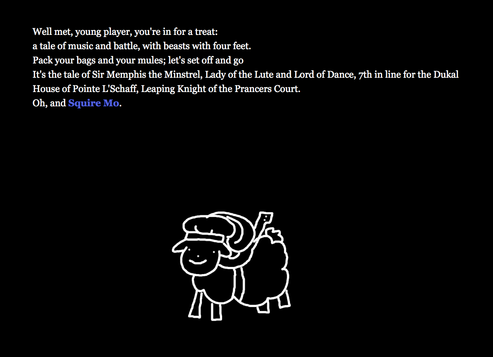

Lena Smith is a Chicago-based artist, designer, and costume technician. She is currently completing a bachelor degree in Theatre Design, Production, and Technology at the University of Illinois with a focus on Costuming and an additional minor in Germanic Studies. The following includes some of her work in UIC's IDEAS 120 course for Fall 2019.
Digital Header
The above image is Lena's digital header, from our class's introductory photoshop assignment. In her process, Lena began by experminenting with shape and line by hand, then moved into creating and editing these shapes digitally. Although the above is the finished product for this assignment, the work was later remastered using Adobe Illustrator, and can be seen at the very top of this page.
Digital Typography
The above is an image of Lena's Digital Typography assignment, which was to be an extension of sorts of the first project. Lena's first step was to move the text from the first assignment into Adobe Illustrator and assess it's flaws. Then she proceeded to alter its aesthetic to more closely fit with the image from the previous assignment. This was followed by a second round of alterations post critique, and later the text was placed back within the digital header.
Digital Non-Linear Narrative

The above images are excerpts from Lena's Digital Narrative assignment. This process began with writing a simplified storyline by hand, and then loading that sequence of events as Twine passages. Once the framework was in, Lena fleshed the events out with more descriptive text, dialogue, and some accompanying images.